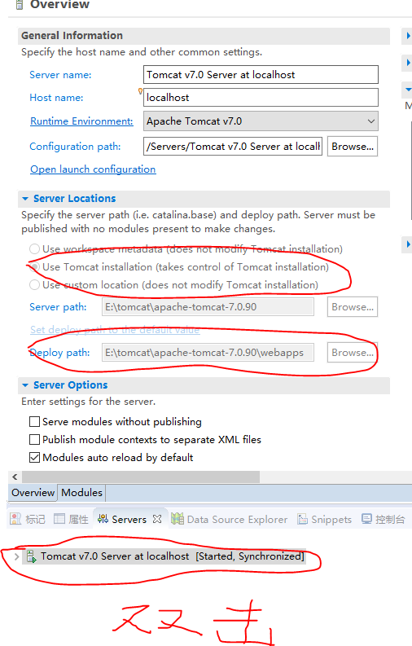

步骤：
- 新建server 选择tomcat8
- 创建动态网站项目 Dymanic Web Project（Dymanic Web Project version 为2.5 版本号为2.5）
问题：
- tomcat运行出错 tomcat8.0无法访问 tomcat7.0无法找到页面
使用tomcat7.0，右键双击创建好的server,将文件路径改为自定义，放到tomcat的webapps里面去

- page.jsp中静态包含，和动态包含的head.html和footer.jsp出现乱码
- eclipse在创建jsp文件的时候默认编码不是utf-8
- eclipse将代码传到github上面